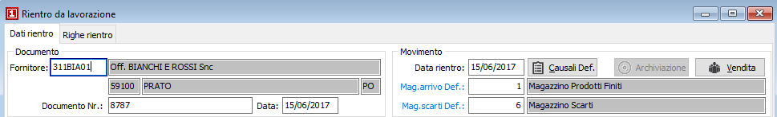
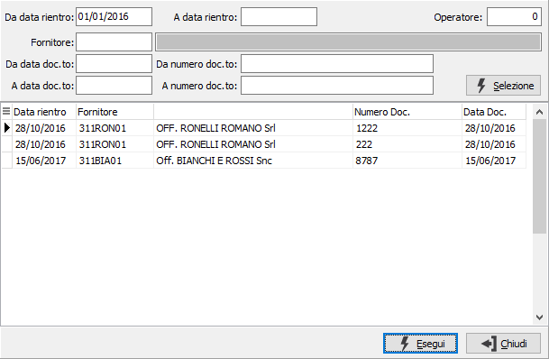

Introduzione
La procedura di rientro si articola su tre pagine, ma una pagina, quella relativa all'evasione ordini, è visibile solo in inserimento.
Accedendo al programma, si presenta la prima sezione video:

Al momento del primo accesso al programma, lo stesso si situa in modalità di Visualizzazione e presenta a video l’ultimo rientro inserito. Il pulsante Vendita, tramite cui si accede ai dati del cliente per l'eventuale fatturazione attiva, se evidenziato indica l'avvenuta generazione di un documento di vendita.
Sul campo ”Fornitore” l’utente deve definire il tipo di azione che intende compiere. In altre parole, deve decidere se inserire nuovi rientri, se visualizzare rientri esistenti o se cancellare rientri esistenti. L’azione da compiere può essere comandata tramite la pressione di alcuni pulsanti della tool bar o tramite l’uso dei corrispondenti tasti funzione, secondo le seguenti modalità:
Ricerca e visualizzazione di un rientro
Sul campo “Fornitore”, in modalità di visualizzazione, per effettuare la ricerca di un rientro è possibile agire sui pulsanti “frecce” della tool bar. Cliccando su freccia a sinistra si potranno visualizzare sequenzialmente i rientri precedenti, mentre cliccando su freccia a destra si potranno visualizzare i rientri successivi.
Ovviamente il metodo illustrato è utile per la ricerca di rientri “vicini” a quello presente a video, ma è improponibile in presenza di consistenti quantità di rientri.
In questi casi, cliccando due volte sul campo “Fornitore” o agendo sul pulsante Zoom, è possibile determinare l’apertura della finestra video di Ricerca rientri.

La finestra video di Ricerca rientri presenta in primo luogo alcuni campi per inserire “filtri” o parametri di ricerca, allo scopo di limitare il numero di rientri da presentare a video. È possibile infatti indicare le date relative ai movimenti di rientro da ricercare, oppure il codice (con possibilità di ricerca tramite lo zoom F9) del fornitore da ricercare, oppure le date relative ai documenti di rientro da ricercare, oppure i numeri relativi ai documenti di rientro da ricercare, o più parametri fra quelli indicati.
Qualsiasi parametro si sia inserito, occorre attivare la selezione cliccando sul bottone Selezione.
Attivata la selezione, nella griglia della sezione video inferiore vengono visualizzati tutti i rientri esistenti coerenti con i parametri di selezione inseriti. Utilizzando i tasti freccia su o freccia giù oppure trascinando con il mouse il cursore a destra della griglia, ci si posiziona sul rientro da visualizzare. Cliccando quindi sul bottone Esegui viene visualizzata la sezione video Dati rientro del rientro desiderato.
Modifica di un rientro visualizzato
Una volta individuato il rientro da modificare come meglio descritto al paragrafo “Ricerca e visualizzazione di un rientro”, quando la sezione video “Dati rientro” è completamente presente a video, è sufficiente premere il tasto funzione F3 oppure cliccare sul pulsante Modifica della tool bar. Viene richiesto se variare solo i dati di fatturazione, per esempio per associare un cliente cui poi seguirà fatturazione dal ciclo attivo, altrimenti è possibile accedere alla modifica del rientro stesso. In fase di modifica è possibile eliminare un rigo esistente o caricare nuove righe, non è possibile variare direttamente un rigo già esistente.
Cancellazione di un rientro visualizzato
Una volta individuato il rientro da cancellare come meglio descritto al paragrafo “Ricerca e visualizzazione di un rientro”, quando la sezione video “Dati rientro” è completamente presente a video, è sufficiente premere il tasto funzione F5 oppure cliccare sul pulsante Cancella della tool bar. Viene visualizzato il messaggio di conferma. Confermando tramite la pressione del bottone Sì, il rientro viene cancellato.
Inserimento di un nuovo rientro
Sul campo data, è sufficiente premere il tasto funzione F4 oppure cliccare sul pulsante Nuovo della tool bar. Sulla barra di stato viene visualizzato lo stato di “Inserimento” ed il cursore rimane sul campo fornitore.
Premendo una prima volta il tasto Esc il programma torna in stato di visualizzazione, da dove è possibile effettuare come già descritto la ricerca e l’eventuale cancellazione di un rientro esistente. Premendo ancora Esc in stato di visualizzazione, si esce dal programma di Gestione rientri.